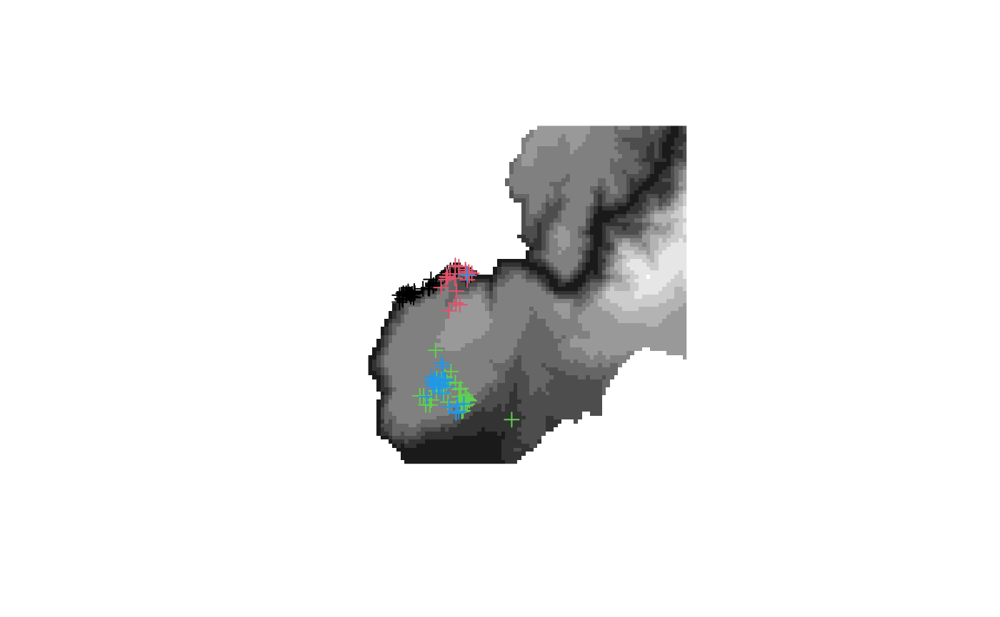
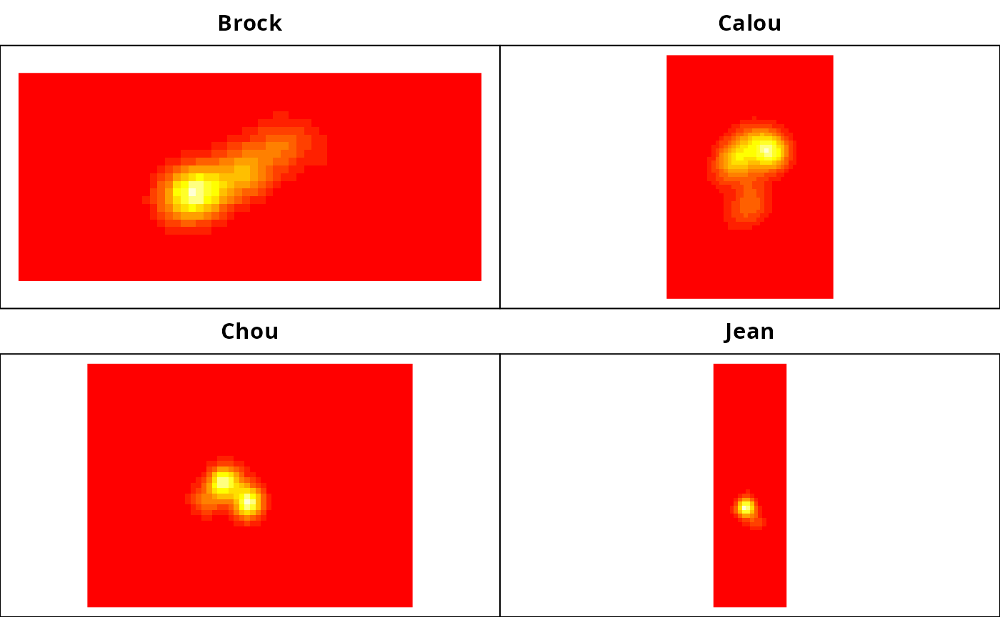
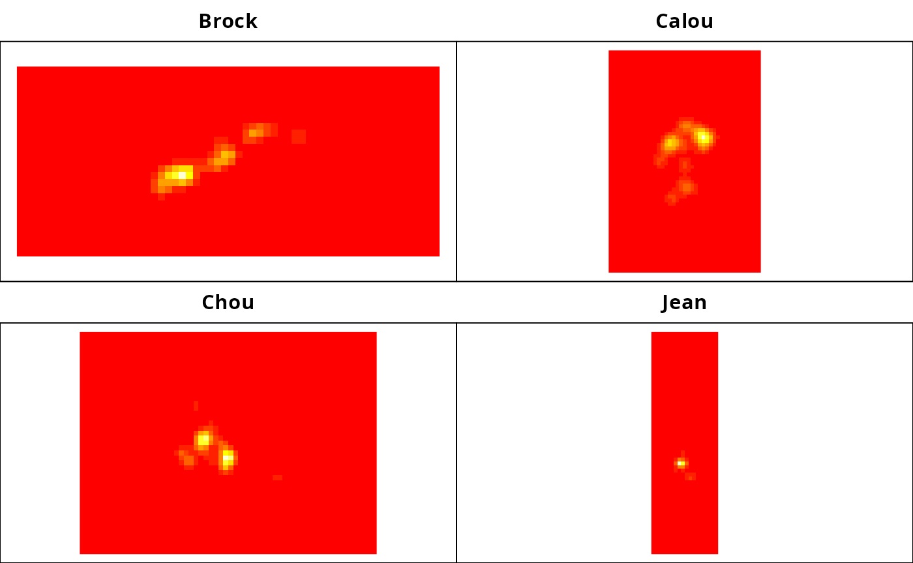
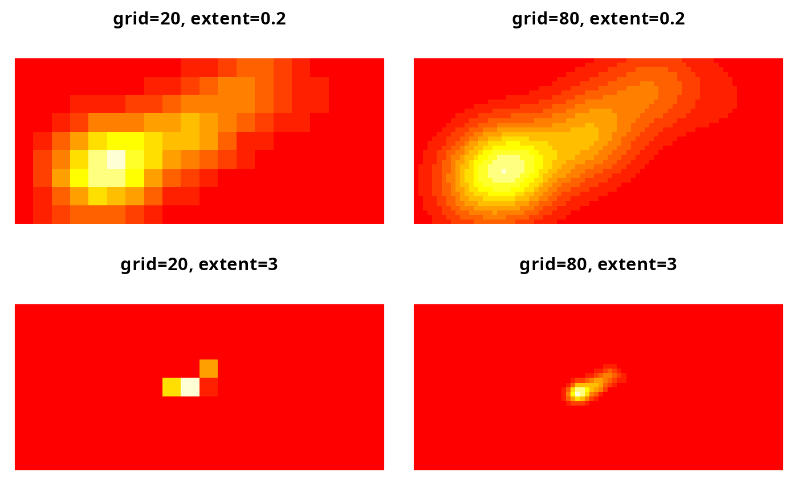
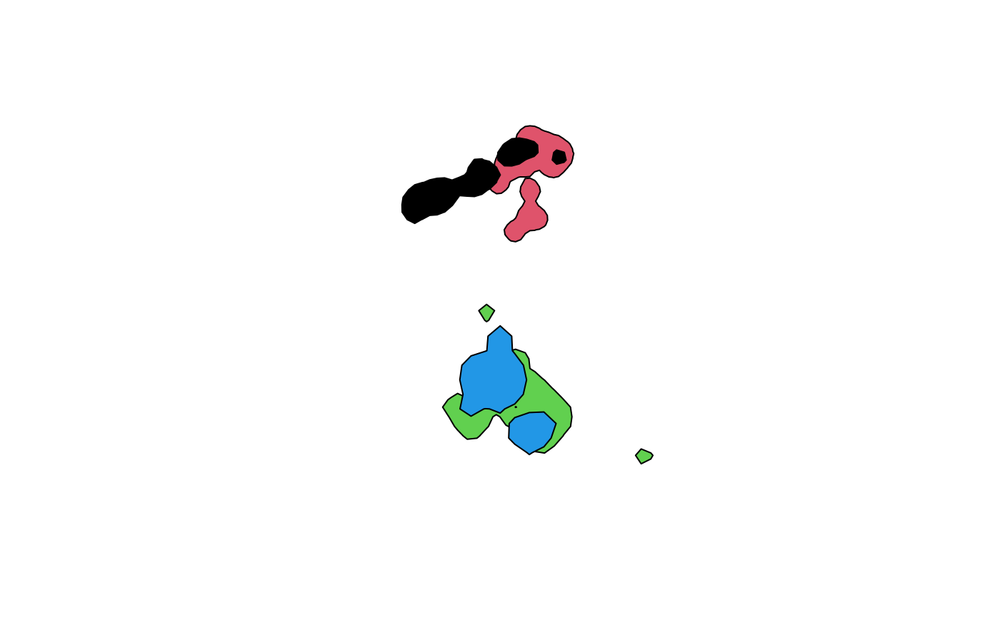
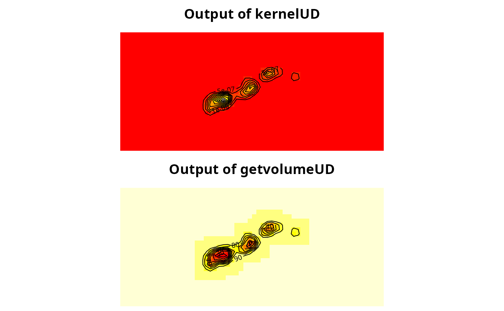
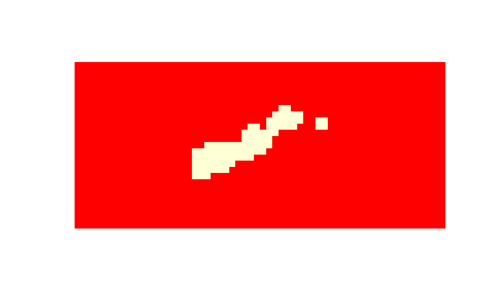

adehabitat_uds.RmdHere we are running through the functions for making and comparing
utilization distributions (UDs) in the R package
adehabitatHR (Calenge 2006) so that we can sort out the
logic of the UD functions in tidytracks and compare the
outputs.
library(adehabitatHR)## Loading required package: sp## Loading required package: ade4## Loading required package: adehabitatMA## Registered S3 methods overwritten by 'adehabitatMA':
## method from
## print.SpatialPixelsDataFrame sp
## print.SpatialPixels sp## Loading required package: adehabitatLTThe adehabitatHR package has function for estimating home ranges from animal tracking data.
The functions accept an object of class SpatialPoints
(one animal) or SpatialPointsDataFrame (multiple
animals).
The example boar tracking data has environmental variables in
map and tracking data in relocs. We’re
interested in the latter, which are stored as a
SpatialPointsDataFrame.
## [1] "list"
names(puechabonsp)## [1] "map" "relocs"
# two spatial points data frames
summary(puechabonsp)## Length Class Mode
## map 4379 SpatialPixelsDataFrame S4
## relocs 119 SpatialPointsDataFrame S4
# the tracking locations are in relocs
head(as.data.frame(puechabonsp$relocs))## Name Age Sex Date X Y
## 1 Brock 2 1 930701 699889 3161559
## 2 Brock 2 1 930703 700046 3161541
## 3 Brock 2 1 930706 698840 3161033
## 4 Brock 2 1 930707 699809 3161496
## 5 Brock 2 1 930708 698627 3160941
## 6 Brock 2 1 930709 698719 3160989
# map of elevation
image(puechabonsp$map, col=grey(c(1:10)/10))
# add relocs
plot(puechabonsp$relocs, add=TRUE,
col=as.data.frame(puechabonsp$relocs)[,1])
Compute 95% MCP for each animal. The output is stored as a
SpatialPolygonsDataFrame.
# compute mcp using just the first column (coordinates) of relocs
mcp95 <- mcp(puechabonsp$relocs[,1], percent=95)
# spatial polygons data frame with area calculated
mcp95## Object of class "SpatialPolygonsDataFrame" (package sp):
##
## Number of SpatialPolygons: 4
##
## Variables measured:
## id area
## Brock Brock 22.64670
## Calou Calou 41.68815
## Chou Chou 71.93205
## Jean Jean 55.88415“An animal’s use of space can be described by a bivariate probability density function, the UD, which gives the probability density to relocate the animal at any place according to the coordinates (x, y)”
The kernel method is used to estimate the UD using the tracking data.
“The basic principle of the method is the following: a bivariate kernel function is placed over each relocation, and the values of these functions are averaged together.”
Bandwidth h choice:
kernelUD function
“The UD is estimated in each pixel of a grid superposed to the relocations.”
This function takes either a SpatialPoints (one animal)
or SpatialPointsDataFrame (multiple animals) object.
Parameters:
xy: An object inheriting the class SpatialPoints
containing the x and y relocations of the animal. If xy inherits the
class SpatialPointsDataFrame, it should contain only one column (factor)
corresponding to the identity of the animals for each relocation.h: a character string or a number - either the method
to use or the h value to use. Default is href.grid: a number giving the size of the grid on which the
UD should be estimated. Alternatively, this parameter may be an object
inheriting the class SpatialPixels, that will be used for all animals.
For the function kernelUD, it may in addition be a list of objects of
class SpatialPixels, with named elements corresponding to each level of
the factor id. Default is 60.same4all: logical. If TRUE, the same grid is used for
all animals (and must be calculated within the function, so you can’t
use your own grid if this is TRUE).hlim: some limits on LSCV bandwidth search (if h =
“LSCV”).kern: a character string. If “bivnorm”, a bivariate
normal kernel is used. If “epa”, an Epanechnikov kernel is used.extent: value for how much to expand the grid around
the range of relocations. Default is 1, i.e. grid roughly spans the data
range.boundary: Default NULL. If, not NULL, an object
inheriting the class SpatialLines defining a barrier that cannot be
crossed by the animals.?? If the UDs have been standardised, then the values should sum to 1. However, they don’t seem to!
kud <- kernelUD(xy = puechabonsp$relocs[,1], # the coordinates field in the spdf
h = "href") # using default params for everything else
kud## ********** Utilization distribution of several Animals ************
##
## Type: probability density
## Smoothing parameter estimated with a href smoothing parameter
## This object is a list with one component per animal.
## Each component is an object of class estUD
## See estUD-class for more information
class(kud)## [1] "estUDm"
# plot for each animal
graphics::image(kud)
# what h values were used for each animal?
sapply(kud, function(x) x@h)## Brock Calou Chou Jean
## h 211.6511 172.0857 202.4603 254.6523
## meth "href" "href" "href" "href"## Brock Calou Chou Jean
## 1.247057e-04 3.055633e-04 7.445909e-05 3.271883e-05The output is a list of class estUDm (estimated UD for
multiple animals).
Let’s look at the first element, the UD for Brock. It is class
estUD and is a list containing objects in @,
including:
@h: the bandwidth used, and method@data: the values for each grid cell(?)@grid: a GridTopology object (from
sp package) with 3 slots:
cellcentre.offsetcellsizecells.dim
kud_brock <- kud[["Brock"]]
class(kud_brock)## [1] "estUD"
## attr(,"package")
## [1] "adehabitatHR"
# h info
kud_brock@h## $h
## [1] 211.6511
##
## $meth
## [1] "href"
# first few values in data
head(kud_brock@data)## ud
## 1 0
## 2 0
## 3 0
## 4 0
## 5 0
## 6 0
range(kud_brock@data)## [1] 0.000000e+00 1.522229e-06
# grid info
kud_brock@grid## Var2 Var1
## cellcentre.offset 696865.00000 3.159977e+06
## cellsize 89.54237 8.954237e+01
## cells.dim 60.00000 2.700000e+01
#so to get grid for TT we want to reconstruct the bounding box
# also the resulution is cell size of 89.954 map units in each direction. So to get the grid we just need to reconstruct the bounding box and then split it into cells of 89.954 map units (how to work out if units the same?, does it matter? - actually probably not)
# find min and max coords of relocs before expanding by extent param
xmin <- min(as.data.frame(puechabonsp$relocs)[,2])
xmax <- max(as.data.frame(puechabonsp$relocs)[,2])
ymin <- min(as.data.frame(puechabonsp$relocs)[,3])
ymax <- max(as.data.frame(puechabonsp$relocs)[,3])
# run the kernel UD
kudl <- kernelUD(puechabonsp$relocs[,1], h="LSCV")
# look at the resulting UDs
image(kudl)
# look at the results of the LCSV minimisation to see if they converged
plotLSCV(kudl)
# what h values were used for each animal?
sapply(kudl, function(x) x@h)## Brock Calou Chou Jean
## CV data.frame,2 data.frame,2 data.frame,2 data.frame,2
## convergence TRUE TRUE TRUE TRUE
## h 75.03992 85.34753 97.54907 97.48811
## meth "LSCV" "LSCV" "LSCV" "LSCV"The UD is estimated at the center of each pixel of a grid. Although
the size and resolution of the grid does not have a large effect on the
estimates (see Silverman, 1986), it is sometimes useful to be able to
control the parameters defining this grid. This is done thanks to the
parameter grid of the function kernelUD.
When a numeric value is passed to the parameter grid, the function
kernelUD automatically computes the grid for the
estimation. This grid is computed in the following way:
Xmin,
Xmax, Ymin, Ymax) of the
relocations are computed.X and Y values is also
computed (i.e., the difference between the maximum and minimum value).
Let Rx and RY be these ranges.e be this parameter. The
minimum and maximum X coordinates of the pixels of the grid
are equal to Xmin − e × Rx and Xmax + e × Rx
respectively. Similarly, the minimum and maximum Y
coordinates of the pixels of the grid are equal to
Ymin − e × RY and Ymax + e × RY
respectively.g intervals,
where g is the value of the parameter
grid.
Consequently, the parameter grid controls the resolution
of the grid and the parameter extent controls its extent.
Using Brock to illustrate:
## The relocations of "Brock"
locs <- puechabonsp$relocs
firs <- locs[as.data.frame(locs)[,1]=="Brock",]
## Graphical parameters
par(mar=c(0,0,2,0))
par(mfrow=c(2,2))
## Estimation of the UD with grid=20 and extent=0.2
image(kernelUD(firs, grid=20, extent=0.2))## Warning in kernelUD(firs, grid = 20, extent = 0.2): xy should contain only one column (the id of the animals)
## id ignored
title(main="grid=20, extent=0.2")
## Estimation of the UD with grid=80 and extent=0.2
image(kernelUD(firs, grid=80, extent=0.2))## Warning in kernelUD(firs, grid = 80, extent = 0.2): xy should contain only one column (the id of the animals)
## id ignored
title(main="grid=80, extent=0.2")
## Estimation of the UD with grid=20 and extent=3
image(kernelUD(firs, grid=20, extent=3))## Warning in kernelUD(firs, grid = 20, extent = 3): xy should contain only one column (the id of the animals)
## id ignored
title(main="grid=20, extent=3")
## Estimation of the UD with grid=80 and extent=3
image(kernelUD(firs, grid=80, extent=3))## Warning in kernelUD(firs, grid = 80, extent = 3): xy should contain only one column (the id of the animals)
## id ignored
title(main="grid=80, extent=3")
## extract grid info for one of the UDs
kud_brock_20_02 <- kernelUD(firs, grid=20, extent=0.2)## Warning in kernelUD(firs, grid = 20, extent = 0.2): xy should contain only one column (the id of the animals)
## id ignored
kud_brock_20_02@grid # gives us the grid topology, including the cell size and dimensions of the grid## Var2 Var1
## cellcentre.offset 698273.8000 3160609.8000
## cellsize 129.7579 129.7579
## cells.dim 20.0000 9.0000## Linking to GEOS 3.12.2, GDAL 3.11.4, PROJ 9.4.1; sf_use_s2() is TRUE
sf::st_crs(puechabonsp$relocs)## Coordinate Reference System: NANB. isopleth us referred to in the adehabitatHR documentation as “home range”.
The getverticeshr function extracts the isopleths from a
UD object. It works on either a estUD (one animal) or
estUDm (multiple animals) object.
NB. this function runs getvolumeUD internally to compute
the cumulative UD, see: https://github.com/cran/adehabitatHR/blob/master/R/getverticeshr.r
iso_90 <- getverticeshr(x = kudl,
percent = 90)
class(iso_90)## [1] "SpatialPolygonsDataFrame"
## attr(,"package")
## [1] "sp"
plot(iso_90, col=1:4)
kernelUD makes the UD (continuous surface probability
distribution, in which all values sum to 1).
getvolumeUD ranks cells in the UD by cumulative
probability (converts density values to cumulative volume values such
that cell values range from 0 to 1, i.e. “what proportion of the total
UD is contained in areas with density >= this cell?”)
vud <- getvolumeUD(kudl)
vud## ********** Utilization distribution of several Animals ************
##
## Type: volume under UD
## Smoothing parameter estimated with a LSCV smoothing parameter
## This object is a list with one component per animal.
## Each component is an object of class estUD
## See estUD-class for more information
class(vud[[1]])## [1] "estUD"
## attr(,"package")
## [1] "adehabitatHR"
sum(vud[[1]]@data)## [1] 159176.3Plot both kernel UD and volume UD for first animal (Brock):
## Set up graphical parameters
par(mfrow=c(2,1))
par(mar=c(0,0,2,0))
## The output of kernelUD for the first animal
image(kudl[[1]])
title("Output of kernelUD")
## Convert into a suitable data structure for
## the use of contour
xyz <- as.image.SpatialGridDataFrame(kudl[[1]])
contour(xyz, add=TRUE)
## and similarly for the output of getvolumeUD
par(mar=c(0,0,2,0))
image(vud[[1]])
title("Output of getvolumeUD")
xyzv <- as.image.SpatialGridDataFrame(vud[[1]])
contour(xyzv, add=TRUE)
Whereas the output of kernelUD is the raw UD, the output
of getvolumeUD can be used to compute the home range (the
labels of the contour lines correspond to the home ranges computed with
various probability levels). For example, to get the rasterized 95% home
range of the first animal:
## store the volume under the UD (as computed by getvolumeUD)
## of the first animal in fud
fud <- vud[[1]]
## store the value of the volume under UD in a vector hr95
hr95 <- as.data.frame(fud)[,1]
## if hr95 is <= 95 then the pixel belongs to the home range
## (takes the value 1, 0 otherwise)
hr95 <- as.numeric(hr95 <= 95)
## Converts into a data frame
hr95 <- data.frame(hr95)
## Converts to a SpatialPixelsDataFrame
coordinates(hr95) <- coordinates(vud[[1]])
gridded(hr95) <- TRUE
## display the results
image(hr95)
“home range area” is computed automatically by
getverticeshr. As for the MCP, the units of these areas are
controlled by the parameters unin and unout of
the function getverticeshr
as.data.frame(iso_90)## id area
## Brock Brock 55.47921
## Calou Calou 67.14385
## Chou Chou 108.41995
## Jean Jean 77.24771To compute isopleth area for several levels, you can use
kernel.area function:
iso_areas <- kernel.area(kudl, percent=seq(50, 95, by=5))
class(iso_areas)## [1] "hrsize" "data.frame"
iso_areas## Brock Calou Chou Jean
## 50 15.23389 19.63337 28.19983 15.27989
## 55 18.44102 22.90559 33.57122 18.33587
## 60 21.64816 26.83227 38.94262 24.44782
## 65 24.85529 31.41339 45.65686 27.50380
## 70 28.06243 36.32173 53.71395 36.67174
## 75 32.87313 41.88452 61.77105 42.78369
## 80 37.68383 48.10175 73.85669 51.95163
## 85 44.89988 55.62787 87.28518 61.11956
## 90 52.91772 65.77178 103.39936 73.34347
## 95 67.34983 80.16958 130.25634 100.84728
plot(iso_areas)These are discussed in the adehabitatHR vignette, but I don’t think
we need to implement them in tidytracks, at least not
yet.
here in the vignette there is some stuff about how to impose a physical boundary on the UD, e.g. if there is a pond or river and the animal does not go into water. I don’t think we need to implement this in tidytracks right now.
Instead of placing a kernel function over each relocation, this method places a kernel function over each movement step (straight line between successive locations). This takes into account the path travelled by the animal AND the time that it took, and so gets around some of the issues with autocorrelation in tracking data.
Brownian bridge kernel method
This is implemented in the kernelbb function in
adehabitatHR, and requires two parameters for the kernel functions. It
also requires the tracking data to be in the form of a
ltraj object from the adehabitatLT
package.
There is also the biased random bridge method, in
the function BRB, followed in the adehabitatHR vignette by
a discussion of “decomposing the use of space into intensity and
recursion”, i.e. distinguishing between the places that the animal often
uses and the places that are used only once, but for a long time.